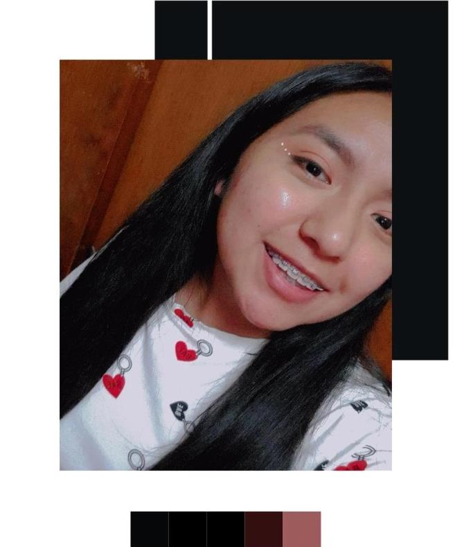

Hola, soy Jess Juárez

¡Hola! Soy Jessica Juárez, un entusiasta estudiante de Ingeniería en Ciencias de la Computación. Desde que era niño, mi pasión por la tecnología y la informática me llevó a explorar el fascinante mundo de la programación y el desarrollo de software.
Me encanta enfrentar desafíos y resolver problemas utilizando mi creatividad y habilidades analíticas. A lo largo de mi carrera, he adquirido conocimientos en lenguajes de programación como Java, Python y JavaScript, así como en diseño de bases de datos y desarrollo web.
Desarrollo Web
Soy un desarrollador web Jr con experiencia en tecnologías front-end y back-end. Tengo conocimientos sólidos en HTML, CSS y JavaScript para crear interfaces atractivas y responsivas.También tengo experiencia en el manejo de bases de datos con MySQL. Estoy entusiasmado por aprender y mantenerme actualizado con las últimas tendencias en desarrollo web.
Tecnolochicas
Recientemente entre como instructora para los cursos de desarrolo web, desarrolo de aplicaciones moviles, robotica e inteligencia artificial.Tomo este me llevo a conocer muchas chicas con el mismo amor y motivacion por la tecnologia.
Estudiante
Siempre he tenido interes sobre los aspectos tecnologicos por ello he estudiado en escuelas fisico-matematicas comence en el CECyT 1 siendo Tecnica en Sistemas Digitales y actualmente me encuetro en la Escuela Superios de Cómputo cursando a Ingeniería en Sistemas Computacionales
Jessica Juárez a demostrado ser una estudiante excepcional, destacando por su dedicación y compromiso con el aprendizaje. Asimismo, su actitud colaborativa y disposición para trabajar en equipo han sido notables, brindando un valioso aporte a sus compañeras de clase.
Jessica Sanchez
Licencia en Pedagogía.
Mentora en Tecnolochicas.

En el tiempo que duro el Bootcamp de Tecnolochicas PRO,Juárez Jessica logro aprender lo basico e importante para desarrollar un pagina web. Lo que demuestra el dominio que tiene ahora en HTML y CSS para desarrollar desde cero un pagina web y haciendo un buen trabajo..
Karla Gonzalez
Tecnolochica PRO
Tuve el gusto de conocer a Jessica Juárez en el bootcamp de TECNOLOchicas, fui testigo de su entusiasmo y proactividad para incursionar en el mundo Tech, demostrando su interés y compromiso por mejorar cada día sus habilidades como desarrolladora Frontend Jr. .
Grecia Olalde.
Estudiante ISC y Tecnolochica